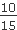
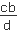
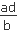

|
Отношением числа а к числу b называют частное от деления числа а на число b.
Отношение числа а к числу b записывают так:
a : b или 
При этом а и b называют членами отношения: а называют предыдущим членом отношения, а b - последующим членом отношения.
Пропорцией называется равенство двух отношений.
Обозначение пропорции: =  или а : b = c : d. или а : b = c : d.
Числа а и d называются крайними членами, а числа b и c - средними членами пропорции.
Примеры пропорций: 3 : 4 = 9 : 12; =  .
Основное свойство пропорции
Произведение крайних членов пропорции равно произведению ее средних членов, то есть
если = , то аd = bc.
Если один из членов пропорции неизвестен, то его можно найти.
1. Неизвестный крайний член пропорции равен произведению средних членов, деленному на известный крайний, то есть,
если х : b = c : d, то x =  .
|
Пример: 3 : 4 = 9 : х. Тогда х = (4 · 9) : 3 = 12
|
2. Неизвестный средний член пропорции равен произведению крайних членов, деленному на известный средний, то есть,
если а : b = х : d, то x =  .
|
Пример: 16 : х = 2 : 5. Тогда х = (16 · 5) : 2 = 40
|
|